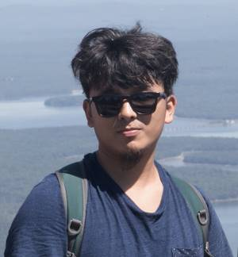
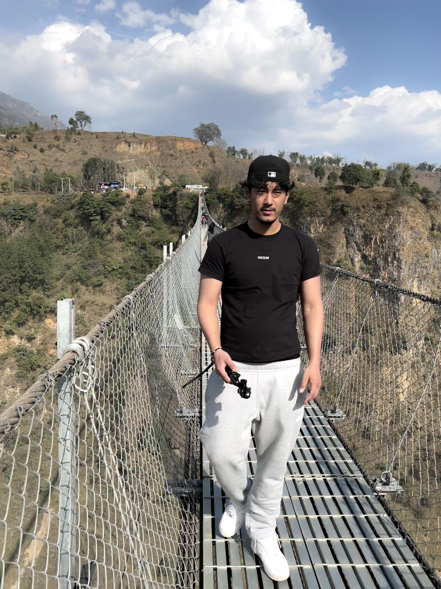
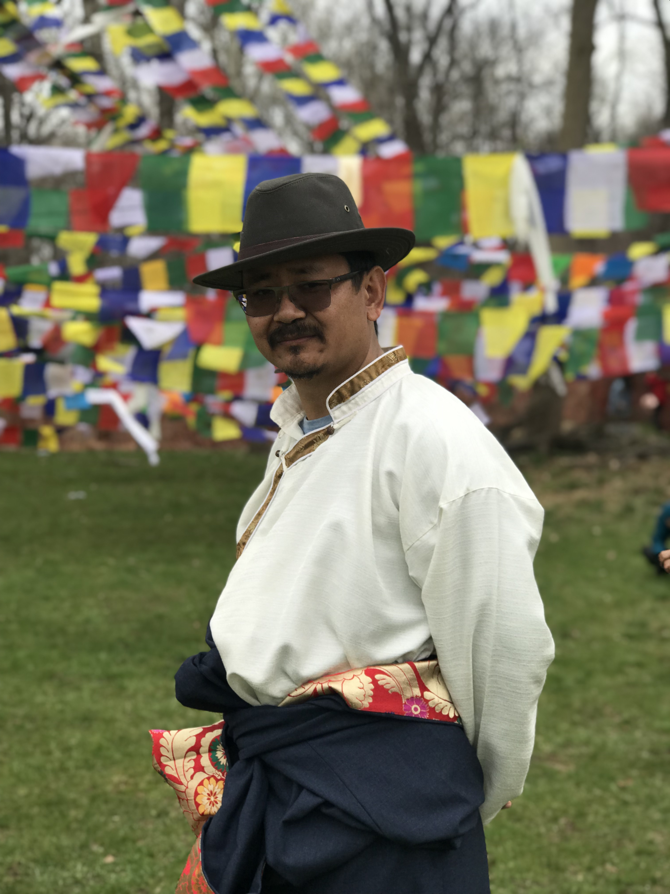

About Us
Sherpa have evolved from various surrounding areas of Nepal, Tibet, and India and their roots are very well established as mountaineers in Nepal. Sherpa students are now poised to take on the world as citizens of the United States of America and their knowledge about where all this began would be a great boon to their professional career as well as enrichment of their lifestyle including better camaraderie within the community to foster growth and friendship. American Sherpa Tours strives to enrich the living standards of the Sherpa people in the United States by organizing various tours and travel within and outside of the United States. Students will have a glimpse of their immediate history visiting their parents and grandparents’ prior homes. They will have a chance to travel and enjoy destinations with their peers. Three-week summer package is developed to provide full-service package from airline tickets, accommodations, and travel within Nepal. The attractions will be Sherpa Villages in Nepal and tourist destinations like Kathmandu, Chitwan and Pokhara. The tour will also accept a Volunteer Parent to travel with the student which will be selected through a lottery system.
Organizers
Adventure loving person with 11 years of traveling and guiding experience with different people around the world. Specialized in organizing tours around Nepal, India and Bhutan.
My name is Jamling Sherpalama, I am 21 years old from Woodside, Queens. I am currently a student at Baruch College studying marketing management. I really enjoy travelling and exploring new places. I was born in America and have only been to Nepal twice, American Sherpa Tours is definitely a great opportunity for others like me or anyone who wants to go visit Nepal for fun to travel and see different parts of Nepal they haven't experienced yet.

I am currently a Computer Science student and I am really thankful to the organizers for providing me this wonderful opportunity to help them with this project. I really think that this project will be helpful to the new generation of American Sherpas.
As a parent I believe we have to provide a better future for our children, as an individual of a community we have to strive to make that community better. I have embraced the fact that we have migrated to the United States. Myself and my children are citizens of this great nation (United States) that has embraced our being without prejudice. This endeavor is to educate our children where we came from in the immediate past and build community in the process.